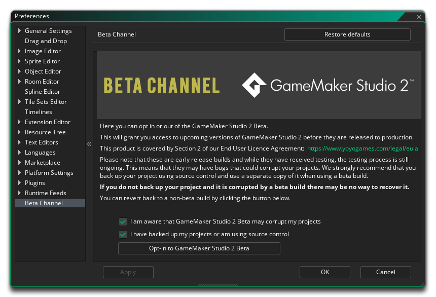

Auf der Seite mit den Beta-Channel-Einstellungen können Sie sich für den GameMaker Studio 2 Beta-Channel entscheiden. Wenn Sie sich für den GameMaker Studio 2, wird empfohlen, GameMaker Studio 2 zu aktualisieren, wenn eine neue Betaversion des Produkts veröffentlicht wird, und nicht nur, wenn ein stabiles Update verfügbar ist. Die Beta-Version des Produkts ist eine Release Candidate-Version, die noch getestet wird und daher Fehler enthalten kann, die sich auf Ihr Projekt auswirken. Bevor Sie sich für die Betaversion von GameMaker Studio 2 anmelden, wird empfohlen, dass Sie Ihr Projekt mit einer Form der Quellcodeverwaltung sichern und anschließend an einer separaten Kopie / einem Zweig in der Betaversion arbeiten.
Bevor Sie sich für den Beta-Kanal anmelden können, sollten Sie sich einen Moment Zeit nehmen, um die Endbenutzer-Lizenzvereinbarung (insbesondere Abschnitt 2) zu überarbeiten. Anschließend müssen Sie die beiden vorgeschlagenen Optionen überprüfen, um sich zu vergewissern, dass Sie sich der Risiken bewusst sind und sich hinterlegt haben up dein projekt. Wenn Sie diese GameMaker Studio 2 aktiviert haben, können Sie auf die Schaltfläche In GameMaker Studio 2 Beta GameMaker Studio 2 klicken. Daraufhin werden Sie aufgefordert, GameMaker Studio 2 neu zu starten. Beim Neustart erhalten Sie Updates vom Beta-Channel-Feed (möglicherweise müssen Sie eine Beta-Version der IDE installieren, falls eine verfügbar ist).
Wenn Sie sich für den Beta-Kanal angemeldet haben, wird auf der Schaltfläche Einstellungen die Option Abmelden von GameMaker Studio 2 Beta GameMaker. Wenn Sie diese anklicken, werden aufgefordert, den gehen Release Notes, wo Sie eine stabile Version von herunterladen GameMaker Studio 2 (klicken Sie auf die Version Header des einen möchten Sie installieren): 
Beachten Sie, dass der Betakanal aus zwei Feeds besteht: Die IDE- und die Runtime-Feeds. Wenn Sie sich für die Beta entscheiden, werden Sie aufgefordert, die Beta-IDE zu installieren, und dies wird auch die Laufzeit der Beta herunterladen und installieren. Sie können jedoch die Laufzeit ändern Sie jederzeit von dem verwendeten Runtime Preferences (und sogar zwischen Beta und Master - Runtimes tauschen).